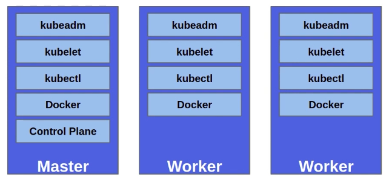
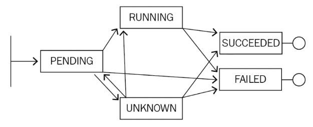
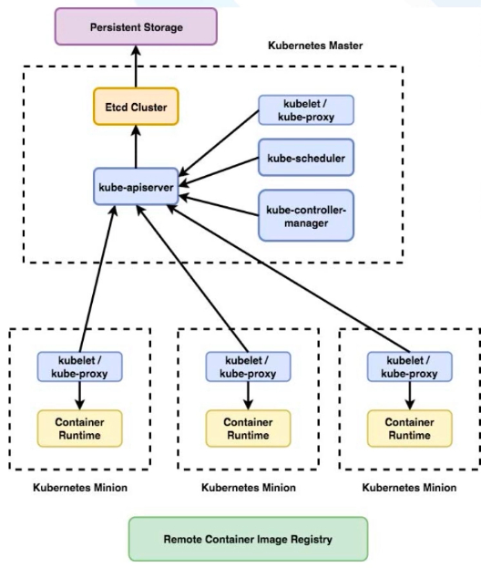
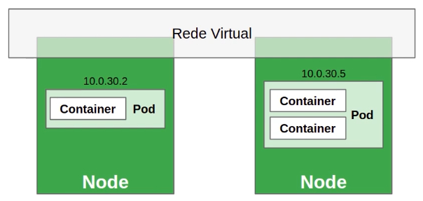

Kubernetes
Conceitos básicos de Kubernetes K8s
Resumo em construção
VoltarGithub do projeto
Site oficial e documentação
Problemática
Nos primórdios, para cada serviço em uma aplicação (Apache, MySQL, nginx...) era necessária uma máquina para alocá-lo, resultando-se em vários servidores para rodar um site que necessitasse dessas várias aplicações, resultando em capacidade subutilizada. Com a chegada da Virtualização, tudo fora executado em máquina física única, porém há muito gasto de hardware na alocação e cotidiano. Dessa forma, havia-se a Consolidação do Servidor, onde que os servidores que não estavam sendo utilizados, em alguns momentos de pouco fluxo, eram desligados. Quando a necessidade de carga era maior, os demais servidores eram novamente ligados, alocando novamente as outras VMs que haviam sido movidas para o único servidor no início (Live Migration). Com o surgimento dos Containers, constituiram-se as aplicações isoladas, descartou-se a necessidade de replicar stacks do SO, como duplicação de libraries, a própria infra do SO e trazendo, com isso, maior desempenho, facilidade de manutenção e leveza.
Conceito
Kubernetes (K8s) é ferramenta de código aberto para automatizar implantação gerenciamento e escalonamento de aplicações conteinerizadas, automatizando, com isso, toda a infraestrutura de aplicações. A Orquestração gerenciará os containers entre os servidores e os ativará/desativará de acordo com a necessidade de carga no cluster, escalando recursos e corrigindo problemas. O Kubernetes pode ser utilizado em Cluster Single Node (1 só servidor) ou Cluster padrão (1-N Master Node (Máquina Mestre/gerenciadora), N Slaves (Máquinas Escravas/gerenciada))
- Quando um node que aloca recursos tem pane, os containers nele serão perdidos?
- Se há 10 réplicas da aplicação 1.0 no cluster, e insiro uma réplica da 1.1, como as demais serão atualizadas?
- Como escalar o software para lidar com o aumento da demana?
Arquitetura K8s
Orquestrar tarefas de gerenciamento. Pode ser instalado em modo single ou cluster. O cluster é formado por nós master e worker, onde o master é node de interação com o usuário. Em grandes estruturas, podem haver mais de 1 master, para o caso de falhas e correção de problemas.
- Master: Executa os componentes do plano de controle;
- Worker: Geralmente executa os Containers.
Componentes:
- kubeadm: Automatiza grande parte do processo de criação/instalação do cluster;
- kubelet: Componente essencial do K8s que lida com a execução de Pods. Atua como um agente em cada node, intermediando (interface) as trocas de mensagens entre API server e Docker runtime. Tecnicamente, faz interação com o Docker e kube-apiserver;
- kubectl: CLI de interação com o K8s cluster.
Pod:


Menor e mais básica estrutura do K8s, criada para abstrair o conceito de Container. Consiste de 1 ou mais Containers, recursos de armazenamento (Volumes) e 1 único ID e IP na rede do cluster K8s. Utiliza-se vários Containers dentro de um Pod geralmente em que hajam vários processos, processos em batch (lote) e demais tarefas pesadas (Ex: Um Container Web Service recebe outra Imagem, que deverá ser processada pelo mesmo, ou seja, quando à 'relações' entre Containers em 1 mesmo Pod).
Ciclo de Vida:
- Pending: Pod foi aceito pelo K8s, mas 1 ou mais Containers ainda não foram criados. Isso inclui tempo de escalonamento e tempo de download da Imagem;
- Running: Pod foi alocado em um node e todos os Containers foram criados. Pelo menos 1 Container deve estar em execução, ou no processo de (re)inicialização;
- Succeeded: Containers do Pod terminaram com sucesso;
- Failed: Containers do Pod terminaram, pelo menos 1 deles com falha (status!=zero ou terminado pelo sistema);
- Unknown: Por alguma razão, o estado do Pod não pode ser obtido. Tipicamente por causa de erro de comunicação entre node e Pod.
Control Plane:
Legenda: Minion é worker node
- etcd: Provê sistema distribuído e compartilhado para armazenar o estado do cluster, sendo os dados armazenados em formato chave-valor (Informações como status do node master, status dos workers, status de Pods, etc). O etcd é executado, no K8s, como um Pod do mesmo;
- kube-apiserver: Serve a API do K8s, baseada em REST, requisições via YAML (yml) que serão convertidas em JSON pelo kubectl;
- kube-controller-manager: Pacote com diversos componentes de controle (Executa ações como verificação de funcionamento de Pods e, se houverem erros, criará novos Pods);
- kube-scheduler: Escalona os Pods para serem executados nos nodes (Quando o Pod é criado, será escalonado para o node mais ideal). Pode também ser manipulado via usuário para escalonamento personalizado (Exemplo, escalonar Pods somente para as máquinas com GPU);
- kube-proxy: Trata da comunicação entre nodes, adicionando regras ao firewall (Como em iptables, para abertura e redirecionamento de portas, túneis, etc).
Tem-se também Registry, sendo geralmente em repositório local do Docker e outro remoto, como Dockerhub.
Rede no K8s
O modelo de redes do K8s envolve a criação de redes virtuais (Rede overlay) no cluster. Cada Pod do cluster tem um IP único (Externo ou interno), mesmo aqueles que são executados em outros nodes. Entre os plugins para criação de redes entre nodes, responsáveis por criar túneis seguros de comunicação, tem-se:
- Flannel;
- Weave.
Arquivo de Manifesto/Especificação
Podem ser escritos via yml ou json, como modelo abaixo:
apiVersion: v1
# Comentário
kind: Pod
metadata:
name: kuard
spec:
containers:
-image: gcr.io/kuar-demo/kuard-amd64:blue
name: kuard
ports:
-containerPort: 8080
name: http
protocol: TCP
Recursos/Objetos no K8s (Kind)
- Pods;
- Nodes;
- Deployment;
- ReplicaSet;
- Service.
kubectl e maneiras de interação
Há 2 maneiras básicas de interagir com K8s:
- Imperativa: Através de diversos parâmetros do kubectl;
- Diz ao K8s o que fazer (Ex: 'Crie 3 Pods com configurações X');
- Ideal para aprendizado, visando experimentos interativos ou debugar serviços em produção.
- Declarativa: Escrevendo manifestos e os usando com o comando kubectl apply.
- Diz ao K8s o que você quer (Ex: 'Quero que seja XYZ', então serão feitas, automaticamente, criações e gestão de Pods e afins para alcançar o objetivo solicitado);
- Melhor para implantar serviços de maneira a facilitar reprodutibilidade;
- Recomendado para gerenciar aplicações K8s em produção.
Comandos de Abordagem Imperativa:
Kubectl get, describe e delete podem ser usados com quaisquer recursos. Além desses, tem-se também create, run, scale, expose, exec, copy e logs. Alguns exemplos abaixo:
# Listar
kubectl get pods
kubectl get nodes
kubectl get services
# Ver informações detalhadas
kubectl describe pod <nome do Pod>
kubectl describe service <nome do Service>
# Exclusão
kubectl delete pod <nome do Pod>
kubectl delete deployment <nome do Deployment>
Elaborado por Mateus Schwede
ubsocial.github.io